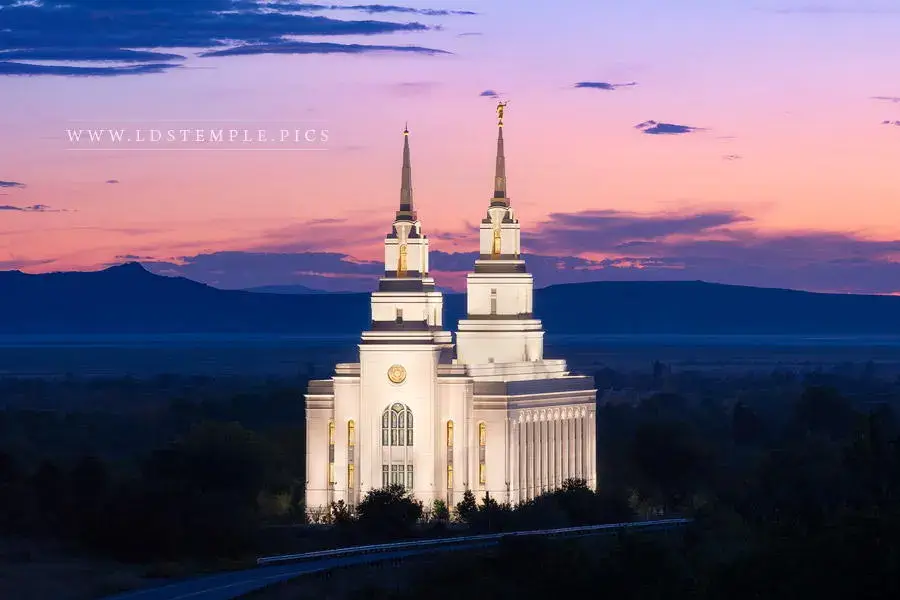
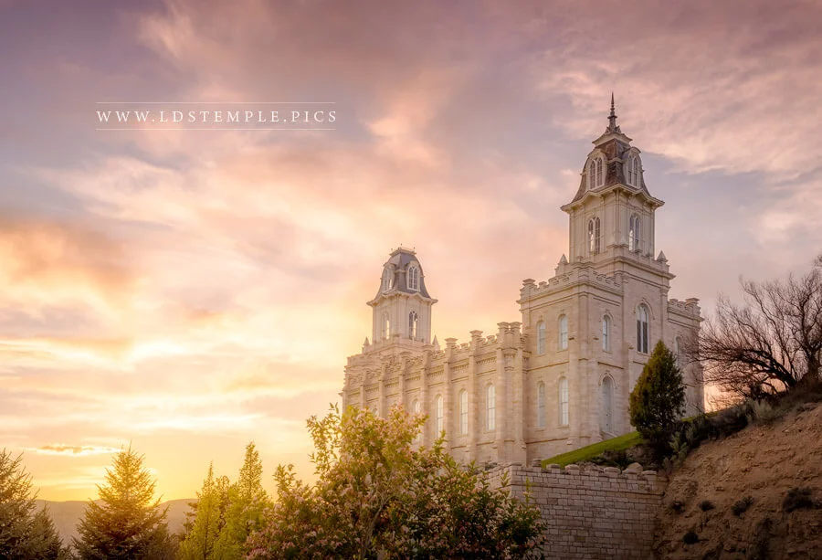
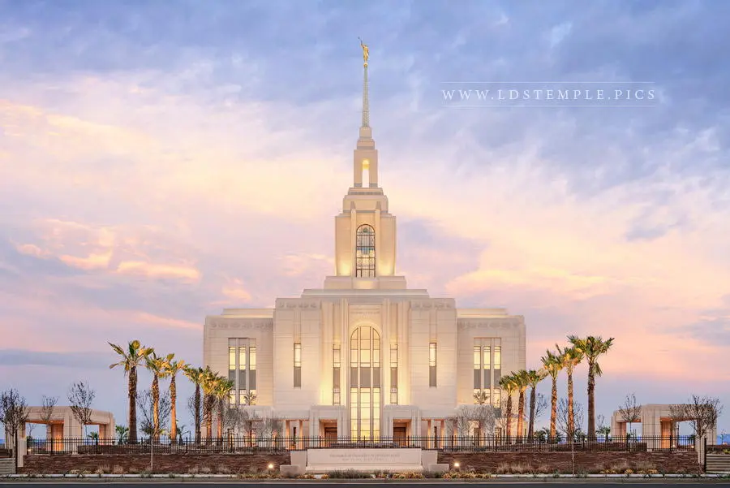
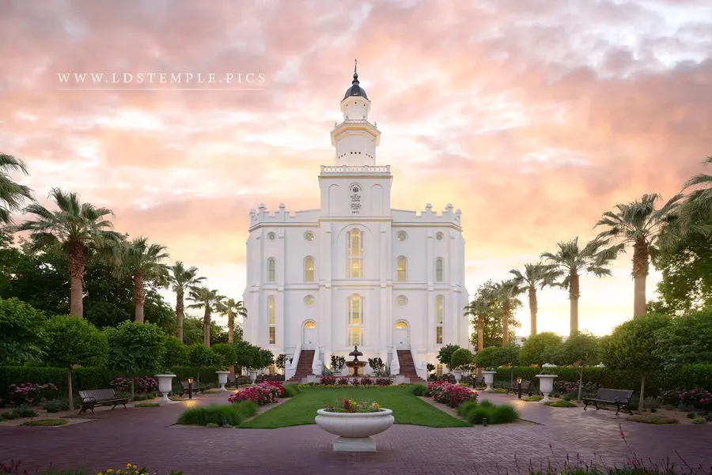

Temple Album
Home
Old
New
Large
Small
Home

Layton Temple

Manti Temple
Orem Temple

Red Cliffs Temple
Richmond Temple
Salt Lake Temple

St. George Temple
Taylorsville Temple
Mount Timpanogos Temple